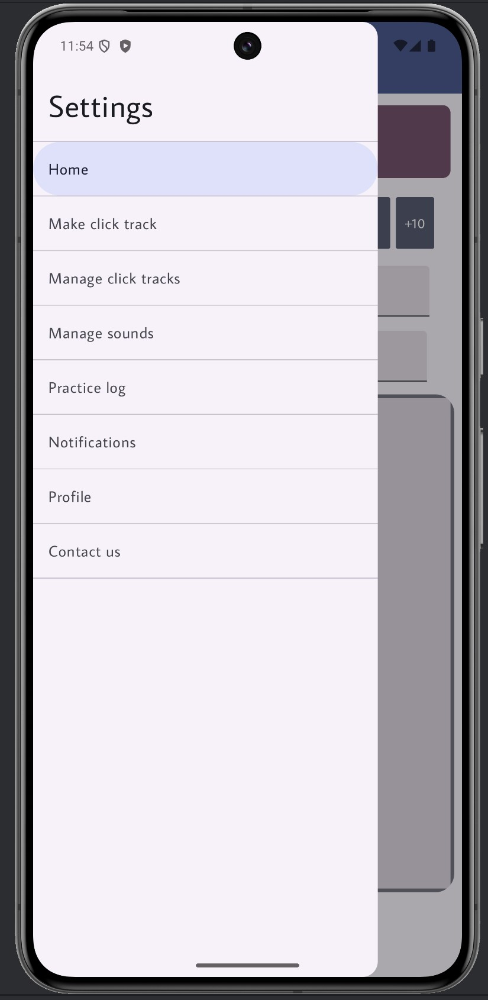
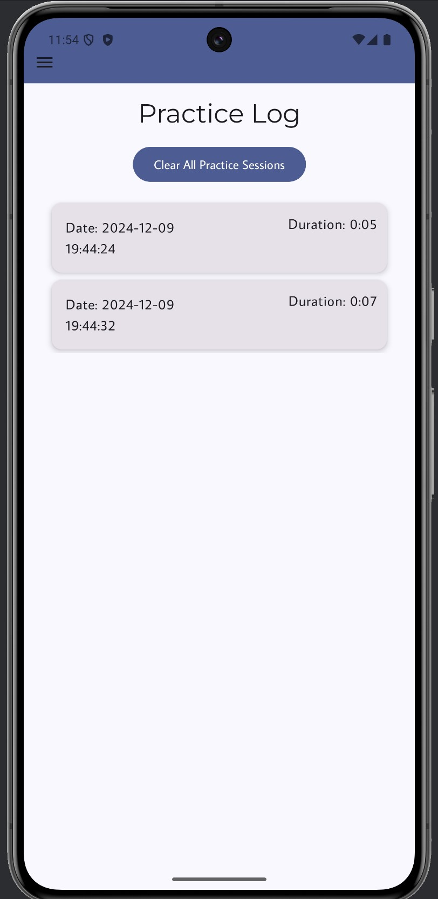

Metronome App
Introduction
Metronome App was developed in Android Studion using Kotlin for Professor Valis's Fall 2024 COSC435 - MOBILE APPLICATION DEVELOPMENT course as a term project. It incorporates elements from several lectures, while creating a novel product for an end user. We decided to make a Metronome because there are not currently any free apps that would do all that a musician would need it to do.

The main screen features a visual metronome in the form of a circle that changes color to the bpm set by the user. An audio click will also play from the device, matching up with the changing colors.
A side menu gives the user access to multiple parts of the app, such as a space where users can create and view click tracks, view recorded practice sessions, handle notifications, and update their profile settings.
Example of one page: practice log. When a user starts the metronome, a practice log session is automatically recorded and logged here.
Credits
Created with Nathan Ketterlinus and Kaitlyn Rayfield from Towson University
Full Code File: metronome-app